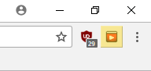

Current Features
- Video scales to the browser size
- View button in the video controls
- Black video background for reduced distractions
- Not leaving YouTube, allowing autoplay and playlists to work
- The ability to have subtitles off of the actual video
- Minimalist and easy to use and get use to
Future Update
The magority of the updates will increase the usefulness of the Full Browser View, by showing other important features of Youtube over the playing video.
- Button control to view other videos
- Button control to view comments over/next to the video
- Option to change the background color of the video
- The ability to search for other videos without leaving/stopping the current video
How to Use
There are two different ways to enter "Full Browser Mode" click the extension Icon or the new view control on the video.
Chrome Extension Icon:
Video Control Button:
To exit "Full Browser Mode" simply click any of the different possible views in the video controls, or click the Chrome extension icon again.
Meeting Requirements
Functionality
- It allows a new type of video viewing for YouTube
- Allows you to view videos efficiently with taking up only the space you want it to
- Constant debugging to make sure that all possibilties work properly and the program doesn't break
Design and Interaction
- Simple UI to focus on the pupose of the extension
- Straight forward instructions and nothing complicated, doing most of the work for the user
HTML and CSS
- Can't say much on this, because it only involves manipulation, and YouTube has some bad standards (sorry)